Lecture 8: ML Teams and Project Management
Lecture by Josh Tobin.
Notes by James Le and Vishnu Rachakonda.
Published September 26, 2022.
Download slides.
0 - Why is this hard?
Building any product is hard:
-
You have to hire great people.
-
You have to manage and develop those people.
-
You have to manage your team's output and make sure your vectors are aligned.
-
You have to make good long-term technical choices and manage technical debt.
-
You have to manage expectations from leadership.
-
You have to define and communicate requirements with stakeholders.
Machine Learning (ML) adds complexity to that process:
-
ML talent is expensive and scarce.
-
ML teams have a diverse set of roles.
-
Projects have unclear timelines and high uncertainty.
-
The field is moving fast, and ML is the "high-interest credit card of technical debt."
-
Leadership often doesn't understand ML.
-
ML products fail in ways that are hard for laypeople to understand.
In this lecture, we'll talk about:
-
ML-related roles and their required skills.
-
How to hire ML engineers (and how to get hired).
-
How ML teams are organized and fit into the broader organization.
-
How to manage an ML team and ML products.
-
Design considerations for ML products.
1 - Roles
Common Roles
Let's look at the most common ML roles and the skills they require:
-
The ML Product Manager works with the ML team, other business functions, the end-users, and the data owners. This person designs docs, creates wireframes, and develops a plan to prioritize and execute ML projects.
-
The MLOps/ML Platform Engineer builds the infrastructure to make models easier and more scalable to deploy. This person handles the ML infrastructure that runs the deployed ML product using platforms like AWS, GCP, Kafka, and other ML tooling vendors.
-
The ML Engineer trains and deploys prediction models. This person uses tools like TensorFlow and Docker to work with prediction systems running on real data in production.
-
The ML Researcher trains prediction models, often those that are forward-looking or not production-critical. This person uses libraries like TensorFlow and PyTorch on notebook environments to build models and reports describing their experiments.
-
The Data Scientist is a blanket term used to describe all of the roles above. In some organizations, this role entails answering business questions via analytics. This person can work with wide-ranging tools from SQL and Excel to Pandas and Scikit-Learn.
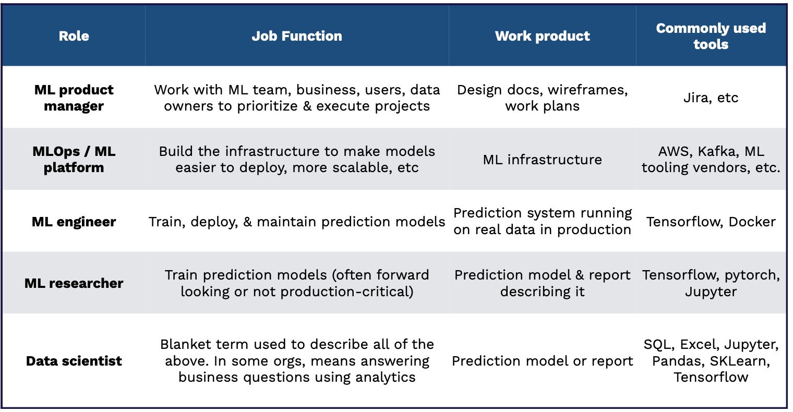
Skills Required
What skills are needed for these roles? The chart below displays a nice visual - where the horizontal axis is the level of ML expertise and the size of the bubble is the level of communication and technical writing (the bigger, the better).
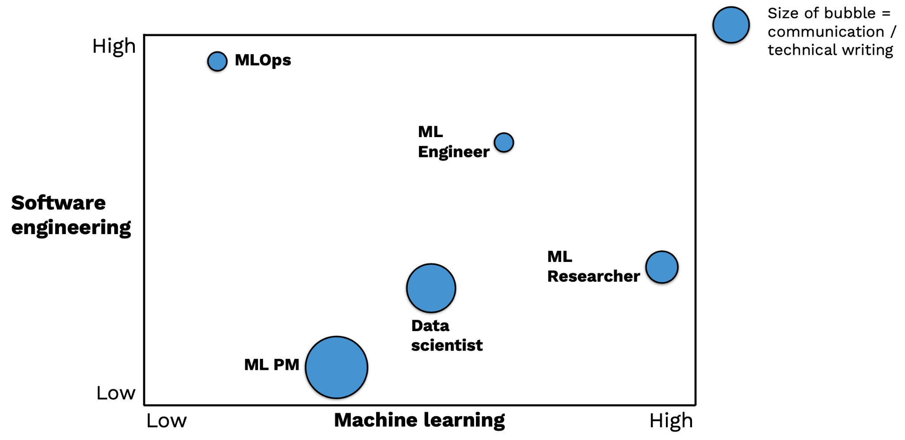
-
The MLOps is primarily a software engineering role, which often comes from a standard software engineering pipeline.
-
The ML Engineer requires a rare mix of ML and Software Engineering skills. This person is either an engineer with significant self-teaching OR a science/engineering Ph.D. who works as a traditional software engineer after graduate school.
-
The ML Researcher is an ML expert who usually has an MS or Ph.D. degree in Computer Science or Statistics or finishes an industrial fellowship program.
-
The ML Product Manager is just like a traditional Product Manager but with a deep knowledge of the ML development process and mindset.
-
The Data Scientist role constitutes a wide range of backgrounds, from undergraduate to Ph.D. students.
There is an important distinction between a task ML engineer and a platform ML engineer, coined by Shreya Shankar in this blog post:
-
Task ML engineers are responsible for maintaining specific ML pipelines. They only focus on ensuring that these ML models are healthy and updated frequently. They are often overburdened.
-
Platform ML engineers help task ML engineers automate tedious parts of their jobs. They are called MLOps/ML Platform engineers in our parlance.
2 - Hiring
The AI Talent Gap
In 2018 (when we started FSDL), the AI talent gap was the main story. There were so few people who understood this technology, so the biggest block for organizations was that they couldn't find people who were good at ML.
In 2022, the AI talent gap persists. But it tends to be less of a blocker than it used to be because we have had four years of folks switching careers into ML and software engineers emerging from undergraduate with at least a couple of ML classes under their belts.
The gap tends to be in folks that understand more than just the underlying technology but also have experience in seeing how ML fails and how to make ML successful when it's deployed. That's the reality of how difficult it is to hire ML folks today, especially those with production experience.
Sourcing
Because of this shallow talent pool and the skyrocketing demand, hiring for ML positions is pretty hard. Typical ML roles come in the following structure:
-
ML Adjacent roles: ML product manager, DevOps, Data Engineer
-
Core ML Roles: ML Engineer, ML Research/ML Scientist
-
Business analytics roles: Data Scientist
For ML-adjacent roles, traditional ML knowledge is less important, as demonstrated interest, conversational understanding, and experience can help these professionals play an impactful role on ML teams. Let's focus on how to hire for the core ML roles.
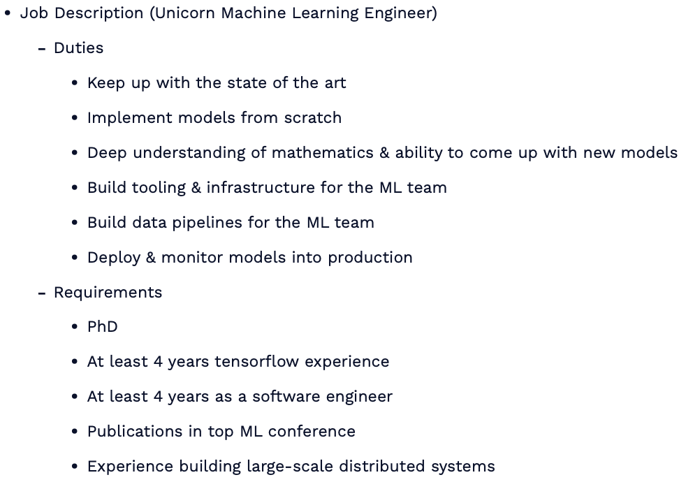
While there's no perfect way to hire ML engineers, there's definitely a wrong way to hire them, with extensive job descriptions that demand only the best qualifications (seen above). Certainly, there are many good examples of this bad practice floating around.
-
Rather than this unrealistic process, consider hiring for software engineering skills, an interest in ML, and a desire to learn. You can always train people in the art and science of ML, especially when they come with strong software engineering fundamentals.
-
Another option is to consider adding junior talent, as many recent grads come out with good ML knowledge nowadays.
-
Finally, and most importantly, be more specific about what you need the position and professional to do. It's impossible to find one person that can do everything from full-fledged DevOps to algorithm development.
To hire ML researchers, here are our tips:
-
Evaluate the quality of publications, over the quantity, with an eye toward the originality of the ideas, the execution, etc.
-
Prioritize researchers that focus on important problems instead of trendy problems.
-
Experience outside academia is also a positive, as these researchers may be able to transition to industry more effectively.
-
Finally, keep an open mind about research talent and consider talented people without PhDs or from adjacent fields like physics, statistics, etc.
To find quality candidates for these roles, here are some ideas for sourcing:
-
Use standard sources like LinkedIn, recruiters, on-campus recruiting, etc.
-
Monitor arXiv and top conferences and flag the first authors of papers you like.
-
Look for good implementations of papers you like.
-
Attend ML research conferences (NeurIPS, ICML, ICLR).
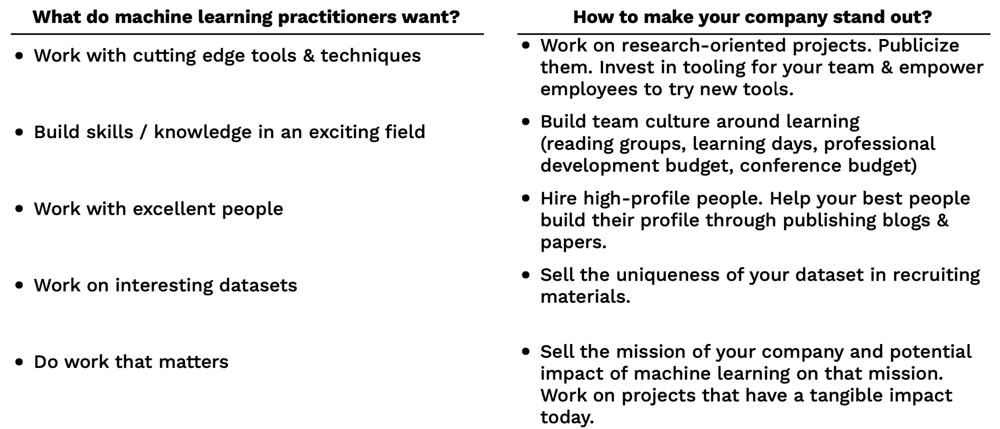
As you seek to recruit, stay on top of what professionals want and make an effort to position your company accordingly. ML practitioners want to be empowered to do great work with interesting data. Building a culture of learning and impact can help recruit the best talent to your team. Additionally, sell sell sell! Talent needs to know how good your team is and how meaningful the mission can be.
Interviewing
As you interview candidates for ML roles, try to validate your hypotheses of their strengths while testing a minimum bar on weaker aspects. For example, ensure ML researchers can think creatively about new ML problems while ensuring they meet a baseline for code quality. It's essential to test ML knowledge and software engineering skills for all industry professionals, though the relative strengths can vary.
The actual ML interview process is much less well-defined than software engineering interviews, though it is modeled off of it. Some helpful inclusions are projects or exercises that test the ability to work with ML-specific code, like take-home ML projects. Chip Huyen's "Introduction to ML Interviews Book" is a great resource.
Finding A Job
To find an ML job, you can take a look at the following sources:
-
Standard sources such as LinkedIn, recruiters, on-campus recruiting, etc.
-
ML research conferences (NeurIPS, ICLR, ICML).
-
Apply directly (remember, there's a talent gap!).
Standing out for competitive roles can be tricky! Here are some tips (in increasing order of impressiveness) that you can apply to differentiate yourself:
-
Exhibit ML interest (e.g., conference attendance, online course certificates, etc.).
-
Build software engineering skills (e.g., at a well-known software company).
-
Show you have a broad knowledge of ML (e.g., write blog posts synthesizing a research area).
-
Demonstrate ability to get ML projects done (e.g., create side projects, re-implement papers).
-
Prove you can think creatively in ML (e.g., win Kaggle competitions, publish papers).
3 - Organizations
Organization Archetypes
There exists not yet a consensus on the right way to structure an ML team. Still, a few best practices are contingent upon different organization archetypes and their ML maturity level. First, let's see what the different ML organization archetypes are.
Archetype 1 - Nascent and Ad-Hoc ML
-
These are organizations where no one is doing ML, or ML is done on an ad-hoc basis. Obviously, there is little ML expertise in-house.
-
They are either small-to-medium businesses or less technology-forward large companies in industries like education or logistics.
-
There is often low-hanging fruit for ML.
-
But there is little support for ML projects, and it's challenging to hire and retain good talent.
Archetype 2 - ML R&D
-
These are organizations in which ML efforts are centered in the R&D arm of the organization. They often hire ML researchers and doctorate students with experience publishing papers.
-
They are larger companies in sectors such as oil and gas, manufacturing, or telecommunications.
-
They can hire experienced researchers and work on long-term business priorities to get big wins.
-
However, it is very difficult to get quality data. Most often, this type of research work rarely translates into actual business value, so usually, the amount of investment remains small.
Archetype 3 - ML Embedded Into Business and Product Teams
-
These are organizations where certain product teams or business units have ML expertise alongside their software or analytics talent. These ML individuals report up to the team's engineering/tech lead.
-
They are either software companies or financial services companies.
-
ML improvements are likely to lead to business value. Furthermore, there is a tight feedback cycle between idea iteration and product improvement.
-
Unfortunately, it is still very hard to hire and develop top talent, and access to data and compute resources can lag. There are also potential conflicts between ML project cycles and engineering management, so long-term ML projects can be hard to justify.
Archetype 4 - Independent ML Function
-
These are organizations in which the ML division reports directly to senior leadership. The ML Product Managers work with Researchers and Engineers to build ML into client-facing products. They can sometimes publish long-term research.
-
They are often large financial services companies.
-
Talent density allows them to hire and train top practitioners. Senior leaders can marshal data and compute resources. This gives the organizations to invest in tooling, practices, and culture around ML development.
-
A disadvantage is that model handoffs to different business lines can be challenging since users need the buy-in to ML benefits and get educated on the model use. Also, feedback cycles can be slow.
Archetype 5 - ML-First Organizations
-
These are organizations in which the CEO invests in ML, and there are experts across the business focusing on quick wins. The ML division works on challenging and long-term projects.
-
They are large tech companies and ML-focused startups.
-
They have the best data access (data thinking permeates the organization), the most attractive recruiting funnel (challenging ML problems tends to attract top talent), and the easiest deployment procedure (product teams understand ML well enough).
-
This type of organization archetype is hard to implement in practice since it is culturally difficult to embed ML thinking everywhere.
Team Structure Design Choices
Depending on the above archetype that your organization resembles, you can make the appropriate design choices, which broadly speaking follow these three categories:
-
Software Engineer vs. Research: To what extent is the ML team responsible for building or integrating with software? How important are Software Engineering skills on the team?
-
Data Ownership: How much control does the ML team have over data collection, warehousing, labeling, and pipelining?
-
Model Ownership: Is the ML team responsible for deploying models into production? Who maintains the deployed models?
Below are our design suggestions:
If your organization focuses on ML R&D:
-
Research is most definitely prioritized over Software Engineering skills. Because of this, there would potentially be a lack of collaboration between these two groups.
-
ML team has no control over the data and typically will not have data engineers to support them.
-
ML models are rarely deployed into production.
If your organization has ML embedded into the product:
-
Software Engineering skills will be prioritized over Research skills. Often, the researchers would need strong engineering skills since everyone would be expected to product-ionize his/her models.
-
ML teams generally do not own data production and data management. They will need to work with data engineers to build data pipelines.
-
ML engineers totally own the models that they deploy into production.
If your organization has an independent ML division:
-
Each team has a potent mix of engineering and research skills; therefore, they work closely together within teams.
-
ML team has a voice in data governance discussions, as well as a robust data engineering function.
-
ML team hands-off models to users but is still responsible for maintaining them.
If your organization is ML-First:
-
Different teams are more or less research-oriented, but in general, research teams collaborate closely with engineering teams.
-
ML team often owns the company-wide data infrastructure.
-
ML team hands the models to users, who are responsible for operating and maintaining them.
The picture below neatly sums up these suggestions:
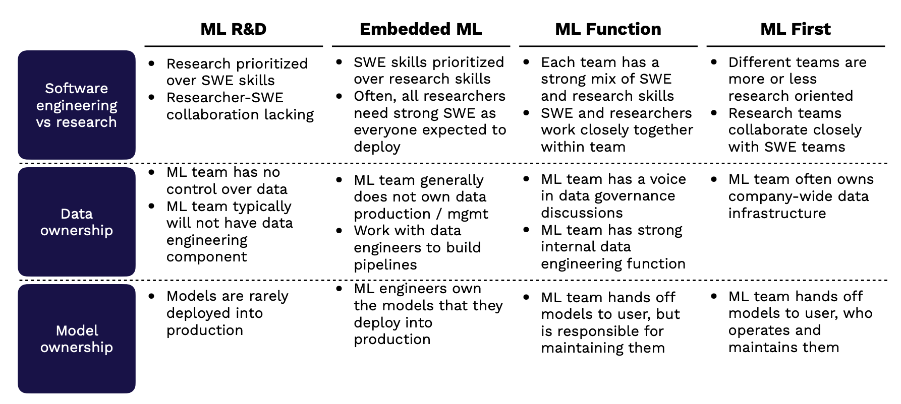
4 - Managing
Managing ML Teams Is Challenging
The process of actually managing an ML team is quite challenging for four reasons:
-
Engineering Estimation: It's hard to know how easy or hard an ML project is in advance. As you explore the data and experiment with different models, there is enormous scope for new learnings about the problem that materially impact the timeline. Furthermore, knowing what methods will work is often impossible. This makes it hard to say upfront how long or how much work may go into an ML project.
-
Nonlinear Progress: As the chart below from a blog post by Lukas Biewald (CEO of Weights and Biases) shows, progress on ML projects is unpredictable over time, even when the effort expended grows considerably. It's very common for projects to stall for extended periods of time.
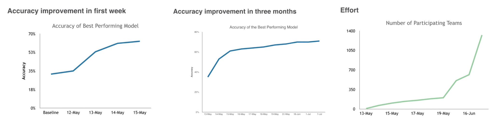
-
Cultural gaps: The relative culture of engineering and research professionals is very different. Research tends to favor novel, creative ideas, while engineering prefers tried and true methods that work. As a result, ML teams often experience a clash of cultures, which can turn toxic if not appropriately managed. A core challenge of running ML teams is addressing the cultural barriers between ML and software engineering so that teams can harmoniously experiment and deliver ML products.
-
Leadership Deficits: It's common to see a lack of detailed understanding of ML at senior levels of management in many companies. As a result, expressing feasibility and setting the right expectations for ML projects, especially high-priority ones, can be hard.
How To Manage ML Teams Better
Managing ML teams is hardly a solved problem, but you can take steps to improve the process.
Plan probabilistically
Many engineering projects are managed in a waterfall fashion, with the sequential tasks defined up front clearly. Instead of forcing this method of engineering management on difficult ML projects, try assigning a likelihood of success to different tasks to better capture the experimental process inherent to ML engineering. As these tasks progress or stall, rapidly re-evaluate your task ordering to better match what is working. Having this sense of both (1) how likely a task is to succeed and (2) how important it is makes project planning considerably more realistic.
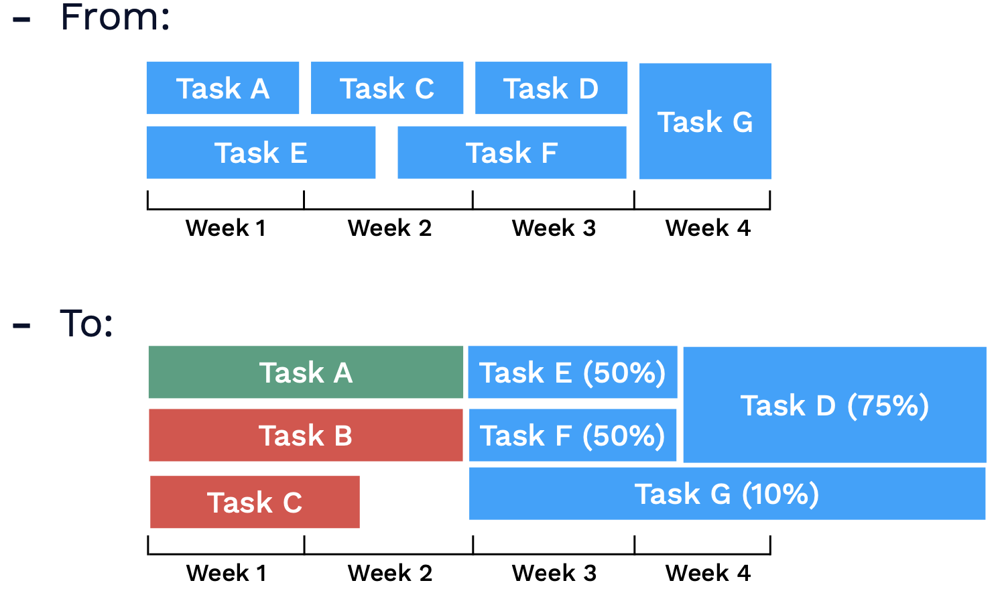
Have a portfolio of approaches
Embrace multiple ideas and approaches to solve crucial research challenges that gate production ML. Don't make your plan dependent on one approach working!
Measure inputs, not results
As you work through several approaches in your portfolio, do not overly emphasize whose ideas ultimately work as a reflection of contribution quality. This can negatively impact team members' creativity, as they focus more on trying to find only what they currently think could work, rather than experimenting in a high-quality fashion (which is ultimately what leads to ML success).
Have researchers and engineers work together
The collaboration between engineering and research is essential for quality ML products to get into production. Emphasize collaboration across the groups and professionals!
Get quick wins
Taking this approach makes it more likely that your ML project will succeed in the long term. It allows you to demonstrate progress to your leadership more effectively and clearly.
Educate leadership on uncertainty
This can be hard, as leadership is ultimately accountable for addressing blind spots and understanding timeline risk. There are things you can do, however, to help improve leadership's knowledge about ML timelines.
-
Avoid building hype around narrow progress metrics material only to the ML team (e.g., "We improved F1 score by 0.2 and have achieved awesome performance!").
-
Instead, be realistic, communicate risk, and emphasize real product impact (e.g., "Our model improvements should increase the number of conversions by 10%, though we must continue to validate its performance on additional demographic factors.)
-
Sharing resources like this a16z primer, this class from Prof. Pieter Abbeel, and this Google's People + AI guidebook can increase awareness of your company's leadership.
ML PMs are well-positioned to educate the organization
There are two types of ML product managers.
-
Task PMs: These are the more common form of ML PM. They are generally specialized into a specific product area (e.g. trust and safety) and have a strong understanding of the particular use case.
-
Platform PMs: These are a newer form of PMs. They have a broader mandate to ensure that the ML team (generally centralized in this context) is highest leverage. They manage workflow and priorities for this centralized team. To support this, they tend to have a broad understanding of ML themselves. These PMs are critical for educating the rest of the company about ML and ensuring that teams trust the output of models.
Both types of PMs are crucial for ML success. Platform PMs tend to have a particularly powerful role to play in pushing an organization's adoption of machine learning and making it successful.
What is "Agile" for ML?
There are two options similar to what Agile is for software development in the ML context. They are shown below:
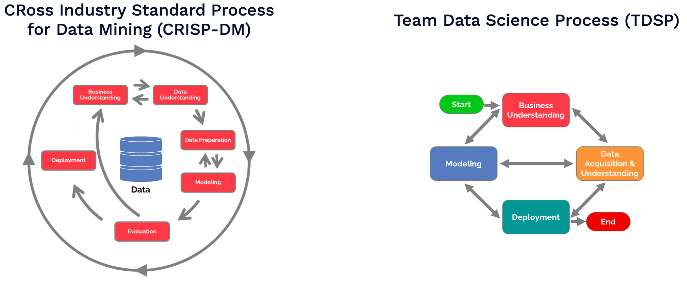
They are both structured, data-science native approaches to project management. You can use them to provide standardization for project stages, roles, and artifacts.
TDSP tends to be more structured and is a strong alternative to the Agile methodology. CRISP-DM is somewhat higher level and does not provide as structured a project management workflow. If you genuinely have a large-scale coordination problem, you can try these frameworks, but don't otherwise. They can slow you down since they are more oriented around "traditional" data science and not machine learning.
5 - Design
Let's talk about how to actually design machine learning products now. The biggest challenge with designing such products often isn't implementing them; it's bridging the gap between users' inflated expectations and the reality.
Users often expect extremely sophisticated systems capable of solving many more problems than they actually can.
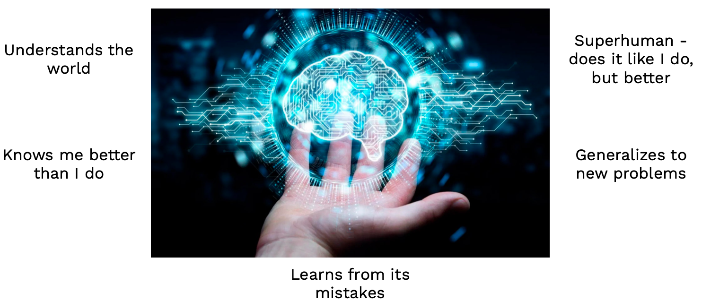
In reality, machine learning systems are more like dogs that are trained to do a special task; weird little guys with a penchant for distraction and an inability to do much more than they are explicitly told.
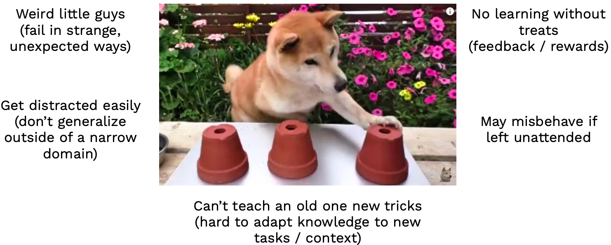
All this leads to a big gap between what can be done and what users expect!
The Keys to Good ML Product Design
In practice, good ML product design bridges users expectations and reality. If you can help users understand the benefits and limitations of the model, they tend to be more satisfied. Furthermore, always have backup plans for model failures! Over-automating systems tends to be a recipe for unhappy users. Finally, building in feedback loops can really increase satisfaction over time.
There are a couple ways to explain the benefits and limitations of an ML system to users.
-
Focus on the problems it solves, not the fact that the system is "AI-powered".
-
If you make the system feel "human-like" (unconstrained input, human-like responses), expect users to treat it as human-like.
-
Furthermore, seek to include guardrails or prescriptive interfaces over open-ended, human-like experiences. A good example of the former approach is Amazon Alexa, which has specific prompts that its ML system responds to.
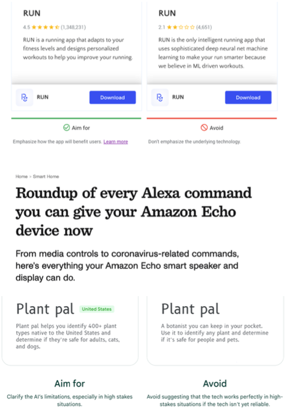
Handling failures is a key part of keeping ML systems users happy. There's nothing worse than a "smart" system that conks out when you do something slightly unexpected. Having built-in solutions to solve for automation issues is extremely important. One approach is letting users be involved to correct improper responses. Another is to focus on the notion of "model confidence" and only offer responses when the threshold is met. A good example of a handling failure approach is how Facebook recommends photo tags for users, but doesn't go so far as to autoassign.
Types of User Feedback
How can you collect feedback from users in a way that avoids these issues? There are different types of user feedback and how they help with model improvement.
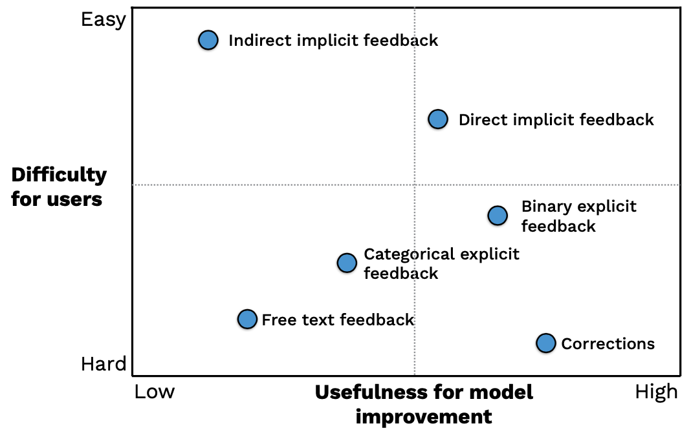
Let's go across this chart.
-
The simplest form of feedback is indirect implicit feedback. For example, did the user churn from the product? That tells you immediately how the user felt about the system without them giving a clear signal themselves.
-
Another form is direct implicit feedback, which involves the user "taking the next step". For example, in an automated user onboarding flow, did the user click through into ensuing steps? This is trickier to implement, but can be useful for future training iterations.
-
The next type of feedback is binary explicit feedback, wherein users are specifically asked (e.g. via thumbs up/down buttons) how they feel about the model performance.
-
You can make this more sophisticated and add categorical explicit feedback, which allows users to sort their feedback into various types.
-
To really get a sense of how users feel, consider offering free text feedback. This is tricky to use for model training and can be involved for users, but it's very useful to highlight the highest friction predictions.
-
The gold standard, of course, are model corrections; they are free labels!
Whenever building explicit feedback into ML systems, avoid relying on users' altruism and be clear about why they should engage in the feedback. Instead, build positive feedback loops by allowing users to experience the benefits of their feedback quickly.
Great ML product experiences are designed from scratch. ML is a very specific technology with clear advantages and drawbacks. Design needs to be thoughtfully executed around these products. It's especially important to allow users to interact safely with ML products that may fail in unexpected ways. Always try to find ways to build in feedback loops to make the ML product better over time.
There are tons of resources that can help you get started with this emerging field.
In conclusion, we talked through a number of adjacent considerations to building ML systems and products. In short, you ship the team as much you do the code; be thoughtful about how you hire, manage, and structure ML teams as much as ML products!
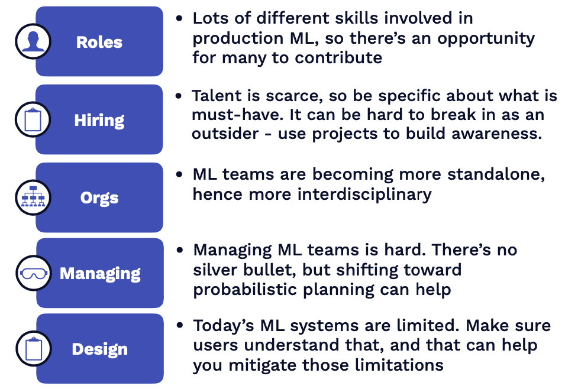
We are excited to share this course with you for free.
We have more upcoming great content. Subscribe to stay up to date as we release it.
We take your privacy and attention very seriously and will never spam you. I am already a subscriber